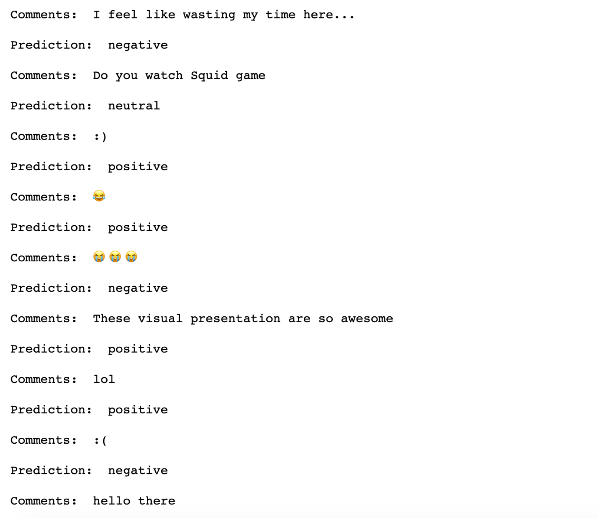
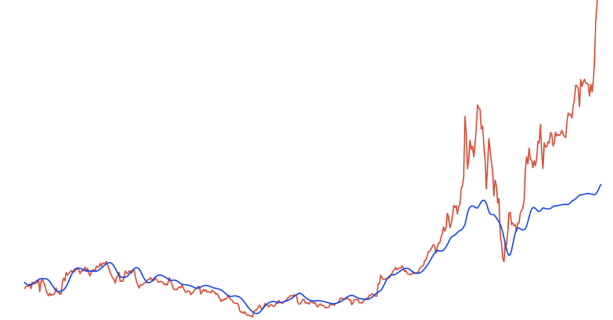

I'm a sophomore studying Data Science at Boston University. My current focus is on applying
various Data Science techniques and Machine Learning algorithms to create impact.
I am also interested in getting into Artifical Intelligence using NLP and strengthen my SQL.
Current objective: Learn nltk, Spacy, Tensorflow, Recommender System, and R!
I took picture around Boston area and utilized Numpy, matplotlib, and Pytorch's pretrained CNN model to turn my images into artwork.

Connect into Youtube API and collect text data of Youtube videos to analyze video performance and predict sentiment(postive, negative, netural) of each unlabeled comments using nltk library.
Connect into yahoofinance and obtain data of SP500 stock and analyze its performance,trend,risk, and change in price overtime.
Draw insights for Amazon Seller

Obtain dataset from BL and Amazon on kaggle and perform Explore Data Analysis to draw business insight for BL on Amazon. Also encode categorical data and handle missing data.

Predict whether or not someone has heart disease based on their medical attributes using Logistic regression from scikit-learn. Achieve 0.89 F1 score by tuning hyperparameters.

Obtained data from past Kaggle Competition. Handle missing data and encode categorical data using Pandas and Scikit Learn. Predict the salesprice of Bulldozers sold using Machine Learning algorithms. Acheive 0.24 root mean square error by tuning hyperparameters.